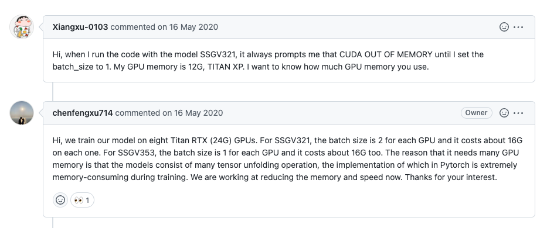
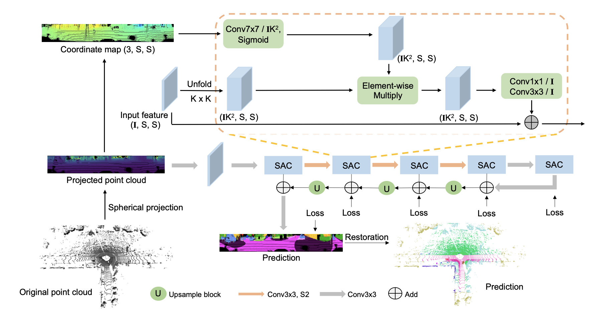
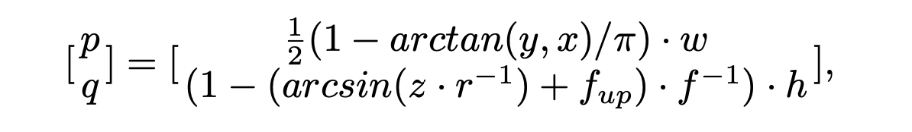
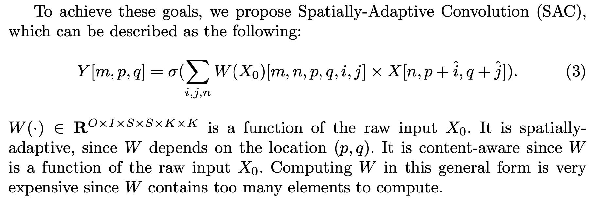
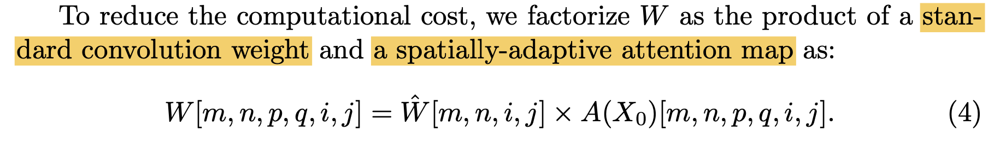
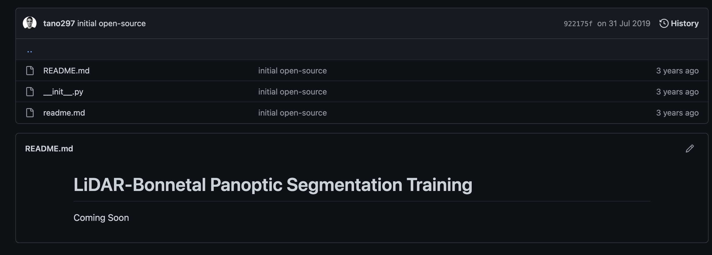
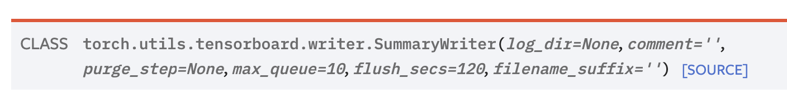
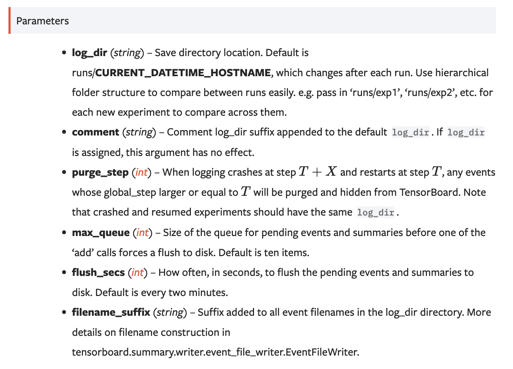
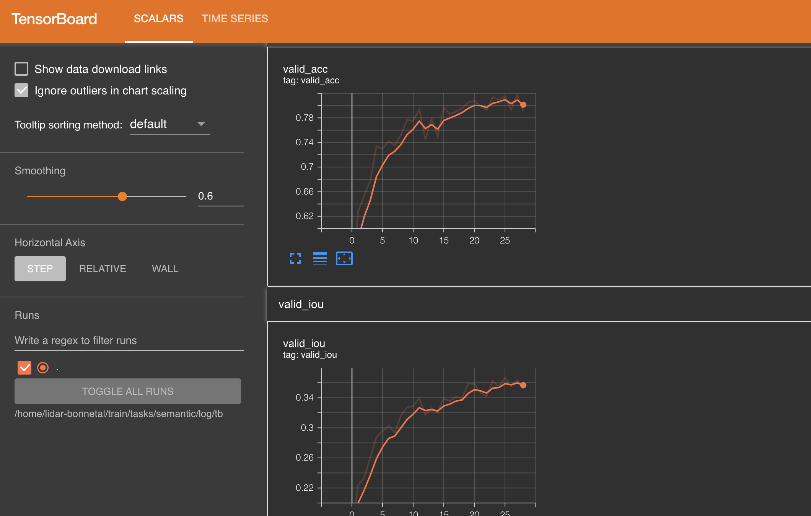

Update: 因为发现了squeezeSegv3其实是基于rangeNet++的一个整体框架上的一个小优化, 而且v3的资源消耗远远大于RangeNet++, 在单台服务器上的部署几乎不可行, 所以后来主要在研究使用rangeNet++搭配不同的backbone.
SqueezeSegv3 是点云point cloud 语意分割 Semantic Segmentation的State-of-art的模型之一, 特点为使用的基于投影 (projection-based)方法将点云转换成图片, 再使用成熟的2D模型进行分割, 最后通过KNN手段进行back interporlation, 获取分割后的点云标签.

高贵的8路泰坦.jpg

使用公式对点云进行2D投射,

其中 $(x, y, z)$ 为原点云坐标, $w, h$为自定的画布宽度与长度, 一般可以在Dataset对应的paper中找到对应的传感器参数, $f = f_{up} + f_{down}$ 为纵向 $FOV$, $f_{up}, f_{down}$ 为对应的水平向上与水平向下视角, 都是用dataset内部本身定义的, $r = \sqrt{x^2 + y^2 + z^2}$ 表示每一个点的范围(range).
经过投射之后, 点云分割就可以变为图片分割. $(p, q)$对应了转换后图像(称为LiDAR Image) 的坐标
导致模型成为显存杀手的直接原因: kernel function过于复杂导致pytorch.tensor经历的过多的unfolding, 狂吃资源…
因为Lidar Image与正常的图像本身所包含的信息不太相同, 比如Lidar image中各个像素对应的位置信息很重要, 而对于一般的2D 图片来说没有那么重要, 所以paper中提出了SAC内核kernel来替代一般的standar convolution.
Kernel Function:

paper中尝试做了一点点优化: 将kernel的计算优化为了standard conv * attention map (但是优化真的只有一点)

To reduce the complexity, we collapse several dimensions of A to obtain a smaller attention map to make it computationally tractable.
作者通过压缩attention map的维度来使计算变得可行.
paper中共提出了两种架构: SqueezeSegV3-21 (SSGV3-21) 与 SqueezeSegV3-53 (SSGV3-53), 基本就是基于rangenet21和rangenet53做出来的.
基本可以认为是rangenet的kernel优化版本
rangeNet++ backbone: https://github.com/PRBonn/lidar-bonnetal
project address: https://github.com/chenfengxu714/SqueezeSegV3
| figure #一些展示用图片
| semaple_data #一些用来inference的样本数据
| src
| auxiliary
| backbones
|-SAC.py #包含了SAC模块的源代码
| common
| sync_batchnorm # 做分布式训练的batch norm sync模块
|- batchnorm.py
|- comm.py
|- replicate.py
|- avgmeter.py # 做average的class
|- laserscan.py # 将point clouds 转化为sphere projection的关键代码
|- laserscanvis.py # 使用wisdom对整个dataset进行可视化转换
|- logger.py # 记日志的
|- onehot.py # 进行one hot转化的
|- warmupLR.py # 初始化cyclic-lr
| tasks
| semantic
| config
| arch # 模型架构配置文件
| labels # dataset配置文件
| dataset # 包含对应数据集的parser, 目前只有kitti
| decoders
|- SAC.py # 包含了由SAC构成的decoder模块
| modules
|- demo_user.py # 展示用的thread class
|- ioueval.py # 计算各种IoU用的
|- segmentator.py # 整体网络构建
|- trainer.py # 模型训练流程定义
|- user.py # 各个线程初始化训练用的class
| postproc
|- demo.py # 演示文件
|- evaluate_biou.py # evalaute border iou
|- evaluate_iou.py # evaluate iou
|- infer.py # 对数据集进行infer
|- train.py # 对数据集进行训练
|- visulaize.py
在RangeNet++ 中, 我们可以选择不同的backbone来进行训练, 其中不乏有SoTA表现的RandLANet以及SqueezeSegv3, 可以知道的是, RangeNet++这一个框架是点云 projection based 方法里面十分有效且成熟的方案.
天国的Panoptic Segmentation适配 ; - ;

为了使rangeNet++能够在我们自定义的训练集上进行训练, 我们可以重新创建的一个新的class parser, 并且重写Dataset类, 或者将自定的Dataset metadata修改为与SemanticKitti的metadata类似. 当前我采用了第二种方法 (主要是比较简单).
Specifically:
由于自定义的class数量与semantickitti不匹配, 为了确保transfer learning能有robust的validation, 我们需要在validation阶段使模型读入semanticKitti的data, 并且对predicted class进行mapping.
因为Task为Semantic Segmentation, prediction 为对于每一个点的onehot class prediction, 所以在求得了argmax之后, 我们直接对predicted outcome进行synthetic-to-real 的mapping 转换, 通过作者提供的SynLiDAR 对 SemanticKitti的转换, 完成之后再计算loss, 这样就完成了Synthetic-> Real 的transfer Learning.
完成fine-tuning之后, 使用该模型对real data进行inference, 同样的, 需要在获得prediction result之后做mapping.
Tensorboard 可以很好的帮助我们可视化训练的过程, 并且直观的判断当前模型的训练状态. 在这里对tensorboard在pytorch上的部署方式做一个简单的记录, 方便自己未来查询:
from torch.utils.tensorboard import SummaryWriter
writer = SummaryWriter()
如果不对SummarWriter进行有参初始化, 数据将会默认存储在./run目录下
这里顺便贴一下SummarWriter()的初始化参数, 原链接:


from torch.utils.tensorboard import SummaryWriter
writer = SummaryWriter() # 实例化TensorBoard writer
model = torch.nn.Linear(1, 1) # 模型
criterion = torch.nn.MSELoss() # loss
optimizer = torch.optim.SGD(model.parameters(), lr = 0.1) # optimizer
def train_model(iter):
for epoch in range(iter): # 共进行iter个epoch
y1 = model(x)
loss = criterion(y1, y)
writer.add_scalar("Loss/train", loss, epoch) # 将当前y=loss, x=epoch记录进入tb中, 表头名字为Loss/train
optimizer.zero_grad()
loss.backward()
optimizer.step()
train_model(10)
writer.flush() # 确保writerbuffer中所有内容全部写入文件中
writer.close() # 当不再使用时, 关闭writer
一些其他的writer function, 以应对不同场景, 原文:
add_scalars(main_tag, tag_scalar_dict, global_step=None, walltime=None) # 添加scalar类型的值, 感觉是最常用,最简单的
add_histogram(tag, values, global_step=None, bins='tensorflow', walltime=None, max_bins=None) # 添加histgram, 方便看出每次训练的数据分布等
add_image(tag, img_tensor, global_step=None, walltime=None, dataformats='CHW') # 添加image, 需要pillow package
add_figure(tag, figure, global_step=None, close=True, walltime=None) # 添加matplotlib进入summary, 需要matplotlib package
add_video(tag, vid_tensor, global_step=None, fps=4, walltime=None) # 添加video, 需要moviepy package
add_audio(tag, snd_tensor, global_step=None, sample_rate=44100, walltime=None) # 添加audio
add_text(tag, text_string, global_step=None, walltime=None) # 添加text
add_graph(model, input_to_model=None, verbose=False, use_strict_trace=True) # 添加graph
add_embedding(mat, metadata=None, label_img=None, global_step=None, tag='default', metadata_header=None)
add_pr_curve(tag, labels, predictions, global_step=None, num_thresholds=127, weights=None, walltime=None) # 添加precision recall curve, lets you understand your model’s performance under different threshold settings
add_custom_scalars(layout) # 自定义添加
add_mesh(tag, vertices, colors=None, faces=None, config_dict=None, global_step=None, walltime=None) # 添加mesh或3D point clouds
add_hparams(hparam_dict, metric_dict, hparam_domain_discrete=None, run_name=None)
首先需要下载:
$ pip install tensorboard
然后启动tensorboard进程:
tensorboard --logdir=runs
logdir跟上对应SummaryWriter配置的记录路径.
tensorboard启动后默认在6006端口 (如果开始跑了但是没有数据有可能只是模型比较慢lol)

至此就可以愉快的可视化训练状态了.